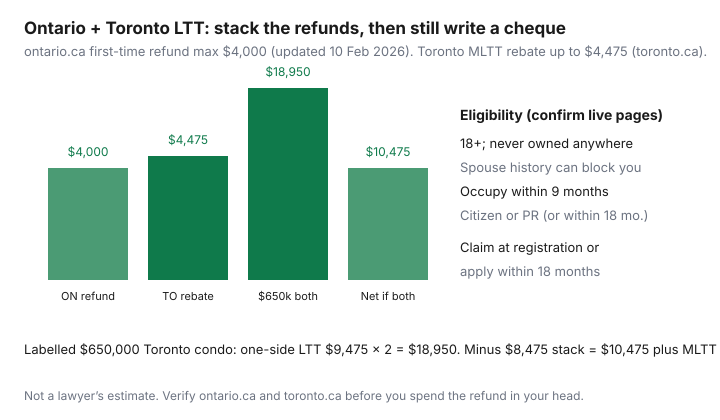

Housing · Canada
Ontario first-time buyer land transfer tax refunds: provincial and Toronto stacks
Ontario buyers underfund closing week because land transfer tax shows up on the lawyer’s statement, not on the listing photo. First-time refunds are real and capped. The provincial maximum is $4,000. Toronto adds a municipal rebate of up to $4,475. Together that is $8,475 if you qualify for both — not a free house, and not a number you should spend before the lawyer confirms the statements.
Ontario.ca’s first-time refund page (updated 10 Feb 2026, used 20 Sep 2026) is the provincial source. Toronto’s MLTT rebate page is the city source. The Toronto stay-horizon page already used these caps on a $680,000 sketch. This page is the closing-cost how-to: who qualifies, how the cheque shows up, and how an FHSA or HBP does not replace the tax.
Disclosure: Mortgage-rate comparison tools are an offer type some buyers use beside a closing-cash worksheet. Saving Optimizer may earn a commission if we later add partner links. We do not currently claim lender, lawyer, or government partnerships. This is not legal, tax, or brokerage advice.
Key takeaways
- Ontario first-time refund: max $4,000 — full provincial LTT on the first $368,000 (ontario.ca, 10 Feb 2026).
- Toronto municipal rebate: up to $4,475 (full MLTT to $400,000). Other Ontario cities do not add this tax.
- Labelled $650,000 Toronto condo: combined LTT $18,950 before refunds; about $10,475 after both if you qualify.
- Claim at registration or within 18 months. Spouse history and occupancy timing can kill the refund.
- FHSA/HBP and the new-home HST rebate are separate programs. Do not stack slogans.
Provincial refund basics and approximate maximums
Ontario residential LTT brackets (the 2026 conversation used on our Toronto page): 0.5% on the first $55,000, 1.0% to $250,000, 1.5% to $400,000, 2.0% to $2 million, 2.5% above that. Beginning 1 January 2017, qualifying first-time purchasers pay no provincial tax on the first $368,000 of consideration. Above that, the refund is capped at $4,000. Pre-2017 deals used a $2,000 cap — irrelevant unless your closing is a time machine.
Worked provincial LTT (one side only):
| Price | Provincial LTT | First-time refund | Net provincial |
|---|---|---|---|
| $368,000 | ~$3,995 | $3,995 (full) | $0 |
| $400,000 | $4,475 | $4,000 | $475 |
| $650,000 | $9,475 | $4,000 | $5,475 |
| $680,000 | $10,075 | $4,000 | $6,075 |
$650,000 math: $275 + $1,950 + $2,250 + 2% × $250,000 = $9,475. The refund does not grow with the house.
Toronto municipal rebate stack for city purchases
Toronto is the Ontario city that charges municipal land transfer tax on top of the provincial tax. For ordinary condos the lower MLTT bands match the provincial ones. On 1 April 2026 the city added steeper luxury bands above $3 million for certain one- and two-unit homes — relevant to a Forest Hill house, not this labelled condo. The first-time rebate is up to $4,475: full MLTT through $400,000, then a cap. It applies to new and resale residential that meet the city’s eligible-home rules; it does not apply to commercial, industrial, or multi-residential as the city defines them.
Labelled $650,000 in the city: provincial $9,475 + municipal $9,475 = $18,950 before refunds. First-time stack $4,000 + $4,475 = $8,475. Net ≈ $10,475 plus the city’s MLTT administration fee (toronto.ca rates page; our Toronto break-even page cited $102.56 + HST). Mississauga, Ottawa, and Hamilton buyers do not get this municipal stack because they do not pay MLTT.

Eligibility: first-time definitions and occupancy timing
High-level tests that appear on both the provincial and Toronto pages (verify the live wording):
- At least 18 years old.
- Occupy the home as a principal residence no later than nine months after the conveyance.
- Never owned a home, or an interest in a home, anywhere in the world.
- If you have a spouse, their ownership history while they were your spouse can block or shrink the claim.
- Canadian citizen or permanent resident; if you become one within 18 months, a later claim may still be possible.
A 24-year-old who co-signed a parent’s place, or who owned a studio abroad, is often not “first-time.” Do not let a salesperson talk you into a refund you will have to repay on audit. Ontario.ca notes the application can be audited and that a fraudulent claim can draw a fine up to $4,000 — the same number as the refund cap, and not a reason to invent eligibility.
How the refund shows up at closing vs later application
The usual path: your lawyer claims the provincial refund (and the Toronto rebate, if any) at registration, so the statement of adjustments already nets them. If that did not happen, Ontario lets you apply through the Ministry of Finance online portal within 18 months of registration or disposition. Toronto accepts a late rebate application within 18 months and warns that a processing fee applies. Do not assume a missed closing claim is gone — and do not wait until month 17 because a missing NOA or citizenship paper will stall you.
Interaction with FHSA/HBP cash planning
An FHSA (CRA: $8,000 annual / $40,000 lifetime room) and the Home Buyers’ Plan ($60,000 RRSP withdrawal, with 2026–2028 repayment-start relief on CRA’s page) are down-payment wrappers. They do not pay LTT. Build three piles: down payment, closing tax and legal, and the first-year reserve on year-one costs. Spending the refund in your head as extra furniture is how chequing accounts die in month two. The federal First-Time Home Buyer Incentive is closed (21 Mar 2024) — do not budget a shared-equity cheque that no longer exists.
New-home HST/GST rebate awareness (high-level, separate program)
HST applies to newly constructed or substantially renovated homes, not to typical resales. Buyers of new homes may claim federal GST/HST new-housing relief and, in Ontario, a provincial new-housing rebate (ontario.ca still points at a provincial-portion rebate of up to $24,000 of the 8% — confirm CRA and the builder’s statement). This is a different form, a different eligibility test, and often a builder credit versus a later CRA filing. It does not replace LTT. Do not let a sales centre “net HST” slide hide the land-transfer line.
Checklist for your real-estate lawyer
- Am I (and my spouse) actually first-time under ontario.ca and, if in the city, toronto.ca?
- Will you claim both refunds at registration? If not, what is the 18-month plan?
- What is the MLTT administration fee and any late-rebate fee?
- What occupancy date are we putting on the affidavits?
- Is this a new home with a separate HST rebate path?
- Please put net LTT on the estimate I use for mortgage-plus-closing cash, not just the purchase price.
If owning only looks cheaper after you invent an $8,475 refund you do not qualify for, you do not have a stack. You have a hope. Run the city rent-vs-buy worksheet with the net tax.
Sources & date stamps
- Ontario.ca, Land transfer tax refunds for first-time homebuyers — $4,000 maximum; $368,000 full-relief threshold; 18-month window (updated 10 Feb 2026; used 20 Sep 2026).
- City of Toronto, Municipal land transfer tax rebate opportunities — first-time rebate up to $4,475; 9-month occupancy; 18-month late claim (used 20 Sep 2026).
- Ontario.ca, Land transfer tax — new-home HST rebate pointer (provincial portion up to $24,000; verify CRA).
- CRA FHSA and Home Buyers’ Plan pages — $8,000 / $40,000 and $60,000 wrappers. FTHBI closed 21 Mar 2024.
Frequently asked questions
What is the Ontario first-time land transfer tax refund?
For conveyances on or after 1 January 2017, qualifying first-time purchasers pay no provincial LTT on the first $368,000 of consideration and receive a maximum refund of $4,000 above that (ontario.ca, page updated 10 Feb 2026). Claim at registration or apply to the ministry within 18 months.
What is Toronto’s municipal first-time rebate?
The City of Toronto’s first-time home purchase rebate is up to $4,475 of municipal land transfer tax — a full MLTT offset on purchases up to $400,000, and a $4,475 cap above that (toronto.ca MLTT rebate page). Eligibility language mirrors the provincial first-time tests. It does not erase provincial LTT above $4,000.
Who counts as a first-time buyer?
High-level, both programs want you 18+, occupying as a principal residence within nine months, a Canadian citizen or permanent resident (or becoming one within 18 months), and never having owned a home anywhere — with spouse-history rules that can block the refund. Read the live ontario.ca and toronto.ca definitions. A 2012 condo in another country counts.
Does this stack with an FHSA or the Home Buyers’ Plan?
Yes, in the sense that they are different tools. FHSA and HBP wrap down-payment cash. LTT refunds reduce tax at or after closing. None of them pays the lawyer. Do not double-count the same dollars.
Is this legal or tax advice?
No. Your real-estate lawyer runs the statements. Verify ontario.ca and toronto.ca before you spend a refund in your head.